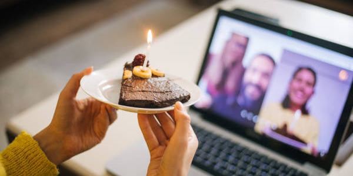

Why Virtual Cakes Are the Future of Celebrations
Celebrations are evolving, and virtual cakes are taking center stage in the digital age. Whether it’s a birthday, anniversary, or even a "just because" moment, interactive cakes are proving that you don’t need a physical cake to make memories sweeter. From reducing waste to creating shared experiences across distances, here’s why virtual cakes are the future of celebrations.
1. No Distance, No Problem
In a world where families and friends are often spread across the globe, virtual cakes bridge the gap. Imagine sending a beautifully designed cake to your best friend halfway across the world, and they can blow out the candles in real-time using your interactive platform. It’s no longer about just watching someone open a gift over Zoom – it’s about participating in the magic of the moment. Virtual cakes make shared experiences possible, no matter where you are.
2. Endless Customization
Gone are the days of being limited to bakery options. With virtual cakes, the sky’s the limit for customization. Want a cake shaped like a galaxy? Or one inspired by your favorite movie? Virtual designs can bring wild imaginations to life without worrying about structural limits or cost. You can even personalize every detail – colors, patterns, candles, and more – to match your celebration theme. It’s the ultimate way to make your cake uniquely you.
3. Eco-Friendly Celebrations
Sustainability is at the forefront of modern celebrations, and virtual cakes are a game-changer in reducing waste. No more leftover slices sitting in the fridge or single-use decorations that end up in the trash. A virtual cake is 100% digital, which means zero waste and a smaller carbon footprint. Plus, for eco-conscious party planners, it’s a guilt-free way to celebrate without sacrificing the joy of a big cake moment.
4. Perfect for the Digital Generation
Let’s face it – we live in a digital-first world. From TikTok trends to Instagram-worthy moments, the way we celebrate has shifted online. Virtual cakes align perfectly with this lifestyle. Not only can they be shared across social platforms, but they also come with interactive elements like blowing out candles using a microphone or sharing the experience with friends via video calls. For the digital-savvy generation, virtual cakes are an exciting and novel way to celebrate.
5. A Cake for Every Budget
Physical cakes, especially extravagant custom designs, can cost a small fortune. Virtual cakes, on the other hand, are budget-friendly without compromising on creativity. Whether you want a simple, elegant design or a highly detailed masterpiece, virtual cakes can fit any budget while still delivering the wow factor. It’s a celebration for everyone, regardless of how much you’re willing to spend.
6. Making Every Moment Special
Virtual cakes aren’t just for birthdays – they’re for all of life’s little moments. Celebrate your first work anniversary, a friend’s big promotion, or even a random Tuesday with a fun, interactive cake experience. With just a few clicks, you can design and send a virtual cake that brightens someone’s day. It’s about bringing joy to the everyday, not just the big milestones.
The Future of Celebrations
Virtual cakes are more than just a fun idea – they’re a reflection of how we connect and celebrate in the modern world. As technology continues to bring us closer together, interactive experiences like virtual cakes will become the norm for creating meaningful memories. Whether it’s saving the planet, bridging long distances, or simply adding a bit of magic to everyday life, virtual cakes are here to stay.
So, next time you’re planning a celebration, why not think outside the (cake) box? Try a virtual cake, and experience how the future of celebrations can be both sweet and sustainable.
Share your celebrations with us!
Have you used a virtual cake for a special moment? We’d love to hear about it. Share your story with #CakeliaCelebrations and inspire others to embrace the magic of interactive cakes.